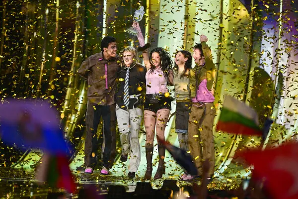
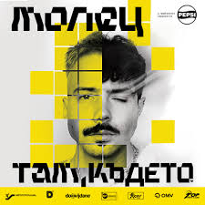
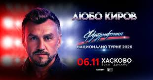
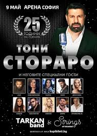

🇧🇬 Bulgarian Song Bangaranga won the Eurovision Song Contest 2026🔥 |
|
 |
Upcoming Concerts in Bulgaria

Молец
Там Където...
20 юни 2026 г. • 20:30 ч.
София — Vidas Art Arena (Колодрум)
40 eur.
Зареждане...

Любо Киров
Футурофония
10 юни 2026 г. • 21:00 ч.
Русе — Летен театър
27 eur.
Зареждане...

Тони Стораро
25 години на сцена
13 ноември 2026 г. • 20:00 ч.
София — Арена 8888 София
60 eur.
Зареждане...